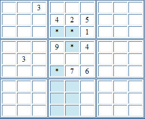
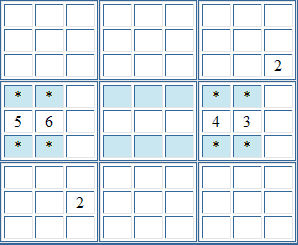

Sudoku Solving Techniques - Block / Block InteractionsFirstly, If a number appears as candidates for only two cells in two different blocks, but both cells are in the same column or row, it is possible to remove that number as a candidate for other cells in that column or row. For example, in the partial puzzle below, the cells marked with * are the only cells in blocks two and five that can contain a 3. This means the 3 in column four must be in block two or five, as must the 3 in column five. As there can be no other 3s in columns four or five, 3 can be eliminated as a candidate for the cells in these columns for block eight.  Secondly, in the example below, the cells marked with * are the only cells in blocks four and six that can contain a 2. This means that 2 can be eliminated from the candidates for rows four and six in block five.  Back to Sudoku Solving Techniques
|